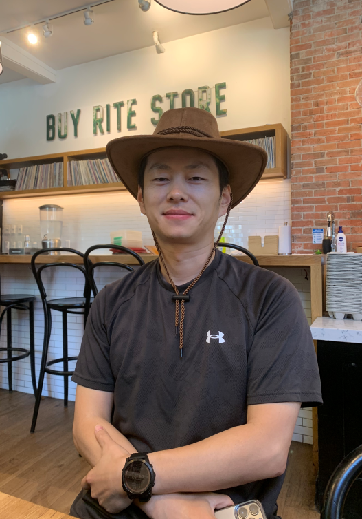

About Me

I am an incoming Assistant Professor in the Department of Computer Science at the University of New Mexico, starting in Fall 2025. Previously, I was a post-doctoral researcher at Future Reality Lab, New York University, after completing my PhD (advised by Prof. Ken Perlin) in Computer Science at NYU. My research interests span several areas including XR, HCI, robotics, and AI. More specifically, I have been working on: 1. VR-based Human balance assessment and rehabilitation with motion analysis, eye-tracking, and force-sensing technologies; 2. XR-based multi-participant collaboration and communication; 3. Interactions with mobile robots and drones; 4. Data-driven content generation and retrieval.
I am looking for prospective PhD students with critical thinking, self-motivation, research curiosity, and sufficient technical skills. Priority will be given to applicants with experience or strong interest in AI, Graphics, HCI, XR, or Robotics. In addition to prospective PhD students, my team also welcomes motivated undergraduate and master’s students who are interested in my research and look for opportunities to participate in research projects and publications. If you are interested in joining my team, please feel free to send me an email with your CV and a brief description of your background and research interests.